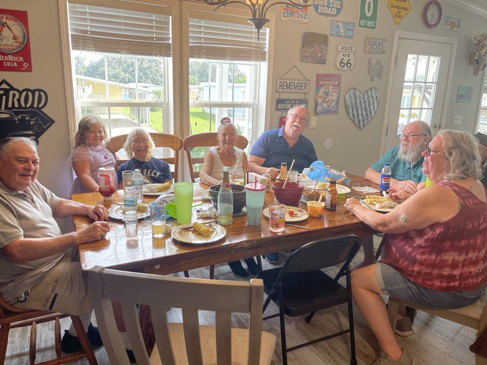

As a family we have been all over the country. From oregon to florida to New Jersey to Texas. As my Family gets older we seem to be coming together in central Florda and make it a point to sit down for Sunday dinner. 
As a new resident of Florida and these Sunday dinners I want to make sure my familes recipes get passed down, and even out to the world to make it a tastier place!
Septembers Dinners!
| Who's Cooking! | What are they cooking! | When did they cook it! |
|---|---|---|
| Art | Baked Ziti with Meat Sauce | September 1st |
| Bob | Went out to eat for Uncle Bobs birthday! | September 8th |
| RaeAnn | Pulled Pork and Coleslaw | September 15th |
Dessert!
| Who's cooking! | What is the dessert! | When did we eat it! |
|---|---|---|
| RaeAnn | German Chocolate Cake | September 1st |
| GG | Grandma's Raisin cake | September 8th |
| RaeAnn | Peach Cobbler | September 15th |
| Some recipes are personal and some are googled and changed to our tastes! | ||